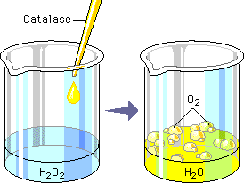

Enzymes catalyze reactions by lowering the activation energy necessary for a reaction to occur. The molecule that an enzyme acts on is called the substrate. In an enzyme-mediated reaction, substrate molecules are changed, and product is formed. The enzyme molecule is unchanged after the reaction, and it can continue to catalyze the same type of reaction over and over.
Each enzyme is specific for the reaction it will catalyze. In this laboratory,
-
Enzyme = catalase
Substrate = hydrogen peroxide (H2O2)
Products = water and oxygen
If a small amount of catalase is added to hydrogen peroxide, you will be able to observe bubbles of oxygen forming.

Over the next several screens we will take a closer look at what happens during an enzymatic reaction. We begin with a model of enzyme structure.
 Continue to Enzyme Structure.
Continue to Enzyme Structure.